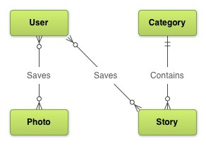
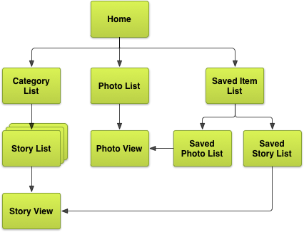
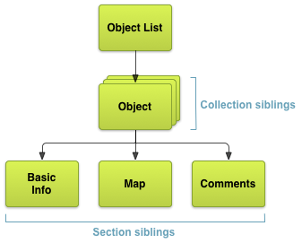
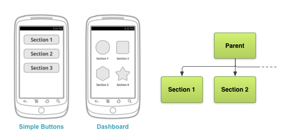
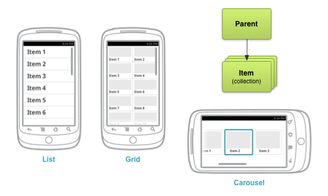
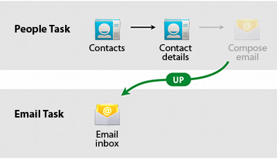
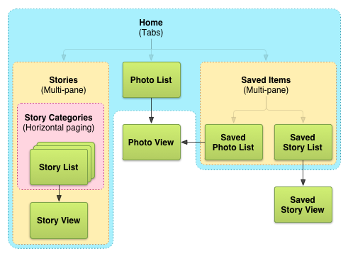

Interaction & Engagement
Android Best Practices: Unit 7
Nitya Narasimhan
References
Android Developers Website
Commonsware Tutorials
#7. Interaction & Engagement
#7.1 Designing Effective Navigation
- Planning Screens & Their Relationships
- Planning for Multiple Touchscreen Sizes
- Providing Descendant & Lateral Navigation
- Providing Ancestral & Temporal Navigation
- Wireframing the Example App
#7.1.1 Planning Screens & Their Relationships
Information Model: What 'types' of things does your user interact with?
#7.1.1.1 Create a Screen List
- When does user interact with data (contexts)
- How does he interact (read, create, update, delete)
- What is the exhaustive set of screens?
- Category List, Story List, Photos List
- Story Detail, Photo Detail
- (Saved) Story List, (Saved) Photo List
- Home (lobby), Profile, Settings,..
#7.1.3 Screen Map for News App
Enough for 'Simplistic' UI Design
Buttons for navigating, lists for information, layouts for detail
#7.1.4 Plan for Multiple Screen Sizes


Determine the screen size at which you want to flip from single pane to multi-pane layouts
Screen implemented as Activity. Content always implemented as Fragment.
#7.1.5 Design for Table 'Orientation'


(Clockwise, from top-left) Stretch-to-fit (some panes may be fixed), Collapse-left (e.g., list shrunk, details expanded), Show-Hide (e.g., list hidden, needs affordances), Stack (for multi-pane content)
#7.1.6 Screen Map for News App

Revisit your exhaustive screen maps list. Identify 'groups' that can be shown in multi-pane layouts
#7.1.7 Descendant and Lateral Navigation
Understand navigation hierarchy.
Descendant navigation is for child content, Lateral navigation is for sibling content
#7.1.8 Sibling Screens (2 Types)
Collection = Items in collecton represented by 'parent'
Section = Different aspects of information about 'parent'
User Interface Design Patterns for both
#7.1.9 Buttons & Targets
'Dashboard' Pattern (touchable, kb-focusable targets.
Ideal for Section Siblings. Rethink for large devices.
#7.1.10 Lists, Grids, Carousels, Stacks
Note: 'Drill Down' list navigation can get cumbersome.
Ideal for Collection Siblings.
#7.1.11 Tabs (Section Siblings)

Lateral navigation. Think Tabs vs. Dashboard.
Ideal for parent with 4-or-less section siblings
#7.1.12 Swipes (Collection Siblings)

Lateral navigation. AKA Horizontal Paging.
Ideal for collection siblings.
Needs complementary 'context' hints
#7.1.13 Temporal Navigation ("Back")
Recall Task BackStack. System typically handles 'Back'
Override within context (e.g., browser) with path to default.
#7.1.14 Ancestral Navigation ("Up")
"Home" (pre 3.0) vs. "Up" (post 3.0 ActionBar)
Safe 'exit' to familiar place (typically parent screen)
Can be contextual (e.g., differs based on device orientation)
TIP: Proactively clear backstack of 'descendant' screens
#7.2 Wireframing the Example App
- Choose Patterns
- Sketch and Wireframe
- Create Digital Wireframes
#7.1.15.1 App Screen Map
Choose patterns to maximize navigation speed
minimize touches, create consistent UI
Choose targeted screen sizes (tablet/phone?)
#7.1.15.2 Step 1: Choose Patterns
- Identify Section Siblings (lateral nav.)
- Identify Collection Siblings (descendant nav.)
- Define Content 'Fragment' (smallest items)
- Define 'Activity' screen for device (phone vs. tablet)
- Think 'alternative layouts' (e.g., for orientation)
#7.1.15.3 Step 1: Phone
#7.1.15.4 Step 1: Tablet
#7.1.15.5 Step 1: Tablet (Alt.)

#7.1.15.6 Creating Wireframes
- Physical sketch (paper/board)
- Refine thinking (details, flow, adaptation)
- Peer reviews (errors, omissions)
- Digital mapping (interactive)
- User reviews (effort + clarity)
- Android build (graphical XML)
#7.1.15.7 Wireframe (Phone)

View SVG Original
{kind=link}
#7.1.15.8 Wireframe (Tablet)

View SVG Original
{kind=link}
#7.1.Assignment
1: Setup
- Create 'cv-project-name' repo in your GitHub
- Pick a unique 'name' for you (let me know)
- Create a branch (1-data-model)
- Create a filename (README.1.datamodel.md) in branch
2: Populate
- In README.1.datamodel.md, describe your information model
- Add document showing entity relationships
- Add document showing screen maps
- Add document showing v1 of screen wireframe
- Update README.1.datamodel.md with reasons for decisions
First Version: ready to review Fri (Mar 7)
Final version: submit (PDF) on Tue (Mar 11)
#7.2 Implementing Effective Navigation
- Creating Swipe Views with Tabs
- Creating a Navigation Drawer
- Providing Up Navigation
- Providing Proper Back Navigation
- Implementing Descendant Navigation
#7.3 Notifying the User
- Buildng a Notification
- Preserving Navigation when Starting an Activity
- Updating Notifications
- Using Big View Styles
- Display Progress in a Notification
#7.4 Adding Search Functionality
- Setting up the Search Interface
- Storing and Searching for Data
- Remaining Backward Compatible
#7.5 Making Your App Content Searchable By Google
- Enabling Deep Links for App Content
- Specifying App Content for Indexing